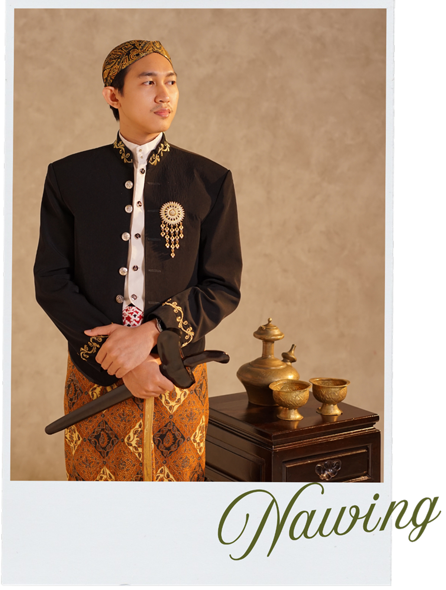
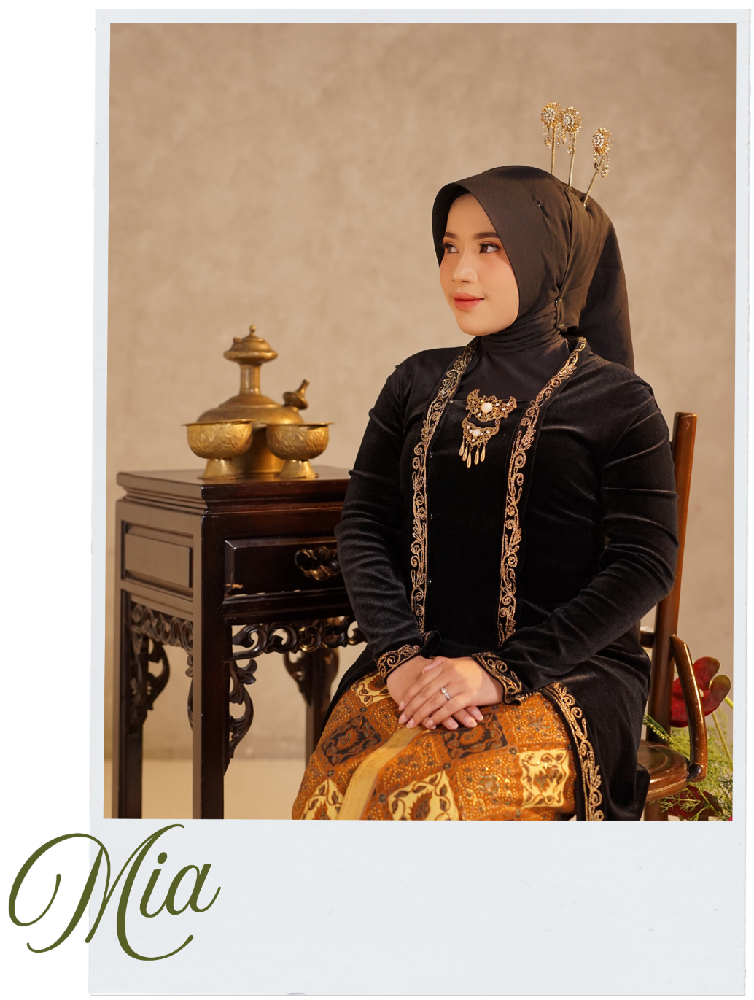

We're Getting Married


Taufan Bisma Ramadhan
The beloved first son of
Bpk. Agus Taufik N (almarhum) & Ibu Istiqomah

&

Thamia Farisatuddiniyah
The beloved daughter of
Bpk. Azhari (almarhum) & Ibu Neneng Kurnia N

16:00 - 17:00 akad
18:30 - 20:30 Reception
20:30 - 21:00 After Party
Location
Kebon Kubil
Jalan Bhayangkara Lingk. Hegar Alam No. 19 Cipocok Jaya, Sumurpecung, Kec. Serang, Kota Serang, Banten


Our Story

2011
Pertemuan pertama kami saat duduk di kelas 4 SD dan kami saling jatuh cinta
2016

Setelah sekian lama tidak bertemu akhirnya kembali bertemu saat acara reunian dan mulai bertukar kontak

2019
Sejak terakhir kali bertemu kita berteman baik dan saling berbagi cerita. Untuk pertama kalinya kami berdua bertemu kembali di Jakarta dan menonton bioskop.
2021

Pada tahun ini kami mulai sering bertemu, rama selalu membantu dan menemani mia saat harus menjalani magang di Jakarta

2025
Setelah 4 tahun memiliki hubungan yang baik dan menjadi tempat berbagi kisah. kami memutuskan untuk kejenjang yang lebih serius dan melangsungkan lamaran
2026

Hari dimana kita mengikat janji suci, bukan akhir dari perjalanan kami. Tetapi kisah lainnya yang baru saja dimulai untuk diarungi bersama selamanya


وَمِنْ كُلِّ شَيْءٍ خَلَقْنَا زَوْجَيْنِ لَعَلَّكُمْ تَذَكَّرُوْنَ
“Dan segala sesuatu Kami ciptakan berpasang-pasangan agar kamu mengingat (kebesaran Allah)” Az-Zariyat:49